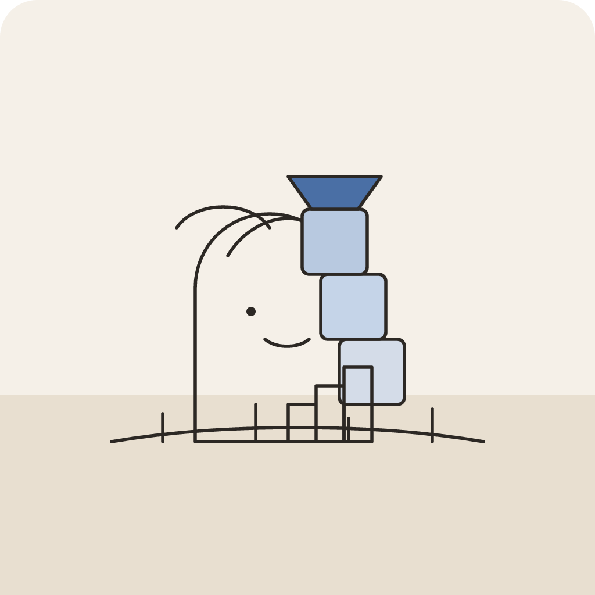
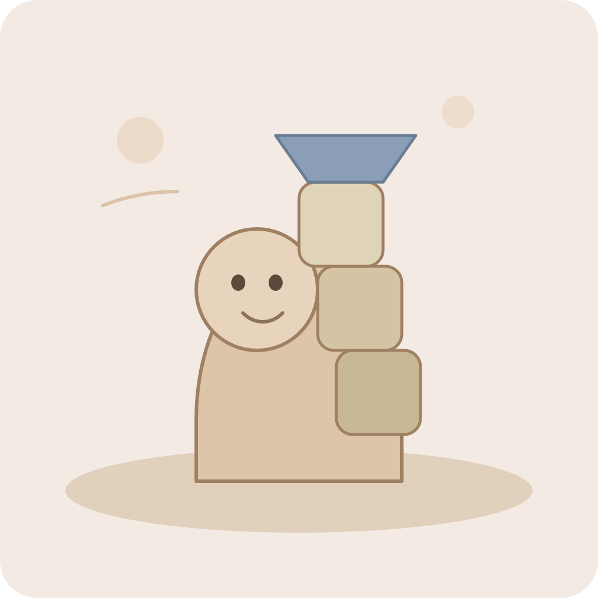
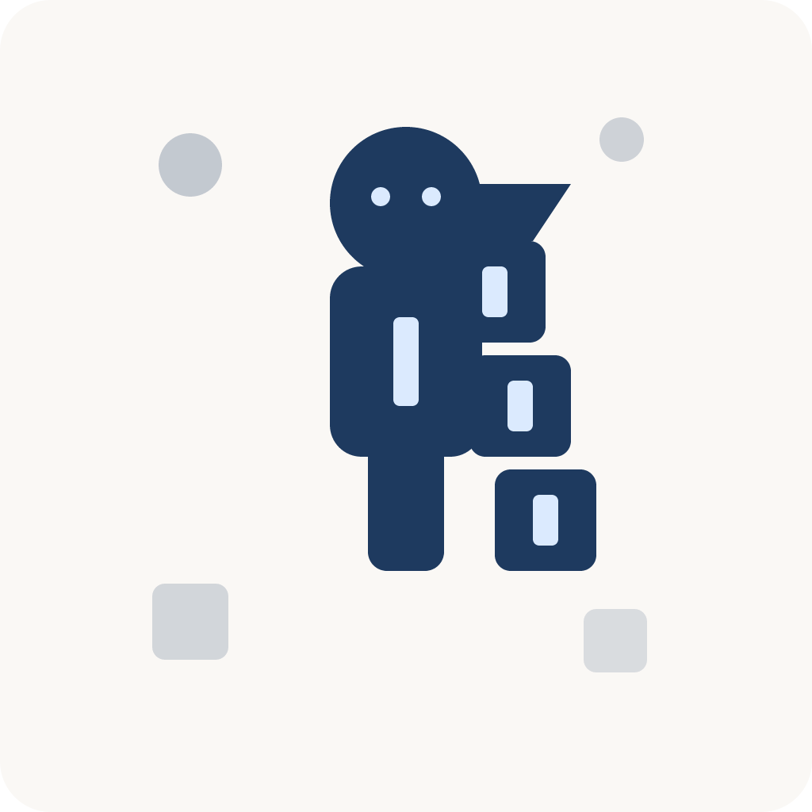

Sample archetype: Stoic Architect (structure, stacking blocks). PNG/JPG exports sit beside the SVG sources in this folder. Re-export: node scripts/convert-philosophy-profile-demos.mjs
node scripts/convert-philosophy-profile-demos.mjs


